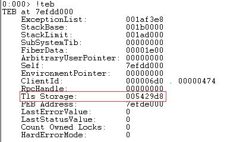
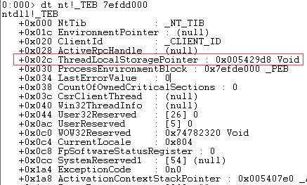

神奇的静态对象 (magic statics)
前置声明：文章可能有错误的地方，希望各位童鞋能够提出~
事故缘由…
为了使用很爽的C++11 特性，我司最新项目是用的VS2015进行开发的。
但是同时又要对XP做兼容（讲真，我个人是不支持对Win7之前的系统做兼容的，我觉得影响发展）。
我们写了个COM组件作为插件，和驱动进行通讯。
在我们进行单元测试的时候，一切正常。但是出了测试安装包之后，发现加载插件会崩溃。
然后我们挂载了Windbg神器来定位崩溃点。
崩溃点是一个读取TLS，这个值为空
(外部静态对象才会有TLS)
想到单元测试程序也是通过VS2015编译的。我们就比较两个进程有啥不一样。
如图:

然后我们看一下 nt!_TEB 结构，发现 Tls Storage 就是 _TEB::ThreadLocalStoragePointer 字段。如图：

于是我们查了一下 ReactOS 0.3.15 看下这个字段到底是啥，找到了这个分配Tls的函数
|
|
但是这个函数并不能得到太多有用信息。我们又看了下谁调用了它，得到了 LdrpInitializeTls 这个函数，从这个函数里面，我们就知道，实际上 _TEB::ThreadLocalStoragePointer 这个字段就是 初始化好的PE文件里面的 Tls 表。
到了这步，我们以为可以很容易的解决问题，既然需要Tls目录，那我们给它一个不就行了？
所以我们给测试代码添加了一个Tls目录..
不过我们还是太天真了..我们的Tls的回调啥也没做，所以在程序执行的时候，执行到并没有初始化的对象直接崩溃了..（对，VS2015生成的Tls表（回调）就是用来初始化静态对象的。）
后来…
我们在 MSDN 发现一个相关的说明
Starting in C++11, a static local variable initialization is guaranteed to be thread-safe.This feature is sometimes called magic statics.However, in a multithreaded application all subsequent assignments must be synchronized.The thread-safe statics feature can be disabled by using the /Zc:threadSafeInit- flag to avoid taking a dependency on the CRT.
大致意思是，由于在C++11开始可以保证静态本地变量初始化时是线程安全的，即“神奇的静态对象”
但是这个特性是默认需要CRT支持的，所以要关闭则需要增加一条编译选项
这样在XP上运行就不会出现问题了。
好了，结束~
以此记录，来避免自己再遇到同样的坑 (●ˇ∀ˇ●)
引用链接：
Storage class (C++)